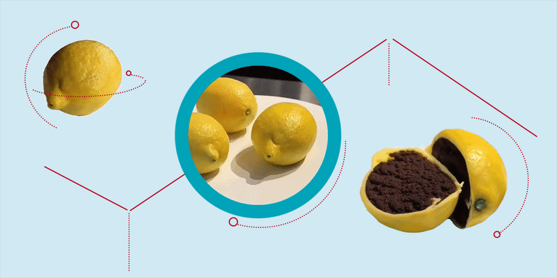

Trending
Cake meme reflects coronavirus absurdity in a world where nothing is what it seems
Earlier this month, a viral video depicting hyper-realistic cakes as everyday items had folks on social media double-guessing every other post, and sometimes even their own realities, effectively launching the next meme : “Is this real or is this cake?”
2 hours agoBy Lucy Hiddleston | 4min read